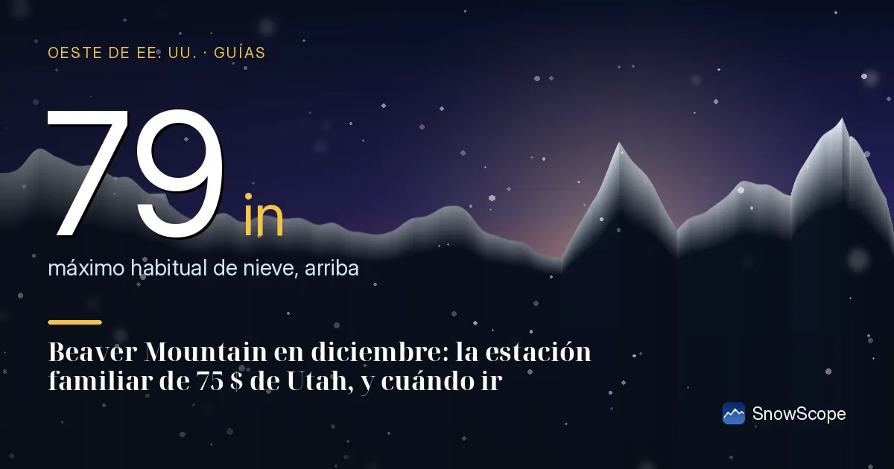

Beaver Mountain en diciembre: la estación familiar de 75 $ de Utah, y cuándo ir
The Beav tiene algo poco habitual en el esquí de Utah: un único precio de adulto, 75 $, sin recargo en los días de mayor afluencia. El problema es el calendario. Según nuestro historial de nieve, a principios de diciembre en Beaver Mountain suele haber poca nieve, y el consejo honesto es venir en la segunda mitad del mes.
Consulta la previsión de nieve en tiempo real de Beaver Mountain en la app SnowScopeEspesor de nieve, alertas de nieve polvo y mapa 3D, gratis.
Una estación familiar sobre Logan Canyon
Beaver Mountain está en lo alto de Logan Canyon, pasado el pueblo de Logan y antes de llegar a Garden City y Bear Lake. Según nuestra cartografía tiene 6 remontes y unos 19 mi (31 km) de pistas, entre aproximadamente 7160 ft (2181 m) y 8760 ft (2670 m). Es de gestión familiar, y se nota: una sola lista de precios, sin pueblo al pie de las pistas.

Diciembre semana a semana
Aquí es donde Beaver Mountain exige paciencia. A media montaña, sobre los 7960 ft (2425 m), el porcentaje de inviernos con buena nieve (una media semanal de 20 in, 50 cm, o más) sube del 43 % en la primera semana de diciembre al 54 % en la segunda, 61 % en la tercera y 76 % en la semana de Navidad.
En fechas concretas: un 1 de diciembre típico tiene 16 in (40 cm) a media montaña, un 15 de diciembre 22 in (57 cm) y un 25 de diciembre 28 in (71 cm). En la base las cifras son más bajas, 17 in (42 cm) en un 15 de diciembre típico, con solo el 33 % de los inviernos por encima de 20 in en esa fecha. Un diciembre flojo (uno de cada diez) deja 10 in (25 cm) a media montaña el día 15: ahí solo se puede esquiar en pistas preparadas.

El precio, y el bono de 10
Para 2026-2027 el forfait de día para adultos (12-69 años) cuesta 75 $. No hay recargo en días de máxima afluencia, algo inusual en un estado donde la tarificación dinámica es la norma.
Si vives cerca, el bono de 10 días reduce el coste por visita: 720 $ si se compra en la oficina de Logan, 740 $ online. Beaver Mountain también está en la lista del Indy Pass: el Indy Base Pass cuesta 419 $ y el Indy+ Pass, sin fechas de exclusión, 469 $, cada uno con dos días en cada estación asociada.
¿Beaver Mountain o Brighton?
Brighton, en Big Cottonwood Canyon, empieza sus forfaits dinámicos en 72 $ para quienes compran con antelación, y tiene mucha más nieve en diciembre según nuestro historial: 37 in (94 cm) a media montaña en un 15 de diciembre típico, con el 89 % de los inviernos por encima de 20 in.
La elección es, pues, cuestión de calendario. Para un precio fijo con el que contar, y un viaje después de mediados de diciembre, The Beav es la opción tranquila. Para un viaje a principios de diciembre, la base de nieve más generosa de Brighton es el lugar más seguro para gastar 72 $ o más.
¿Está empeorando?
El inicio de temporada se ha debilitado aquí. En los primeros 15 inviernos de nuestro registro, a media montaña había 26 in (66 cm) en un 15 de diciembre típico y el 73 % de los inviernos superaba 20 in. En los últimos 15 inviernos fueron 17 in (43 cm) y el 33 %. El invierno pasado hubo 10 in (26 cm) en esa fecha. Planifica para finales de diciembre, y vigila el mapa de nieve antes de conducir hasta allí.
Consejos para esquiadores
- Apunta a la semana antes de Navidad o más tarde: las probabilidades de buena nieve suben cada semana de diciembre.
- Quienes esquían a menudo en la zona deberían mirar el bono de 10 o el Indy Pass en lugar de los forfaits sueltos.
- Logan Canyon (US-89) es una carretera de montaña: lleva cadenas o usa neumáticos de nieve.
- Las pistas de inicio de temporada pueden esconder rocas: mantente en las pistas preparadas hasta que se asiente la base.
Referencias y créditos
- Beaver Mountain, tickets and passes 2026-2027 (official) www.skithebeav.com/tickets-and-passes/
- Indy Pass, shop 2026-27 (official) www.indyskipass.com/shop
- Brighton Resort, lift tickets 2026/27 (official) www.brightonresort.com/lift-tickets
- Snow King Mountain, winter day tickets (official store) store.snowkingmountain.com/en/catalogue/category/500-winter-lift-tickets/510-day-ticket_447/
- OpenSkiMap (mapped lifts and runs) openskimap.org/
- avalanche.org, US avalanche centers and forecasts avalanche.org/
Sobre estas cifras
Nieve actual: el mapa de SnowScope. Remontes, pistas y alturas: cartografía OpenSkiMap. Precios: las páginas oficiales listadas abajo, consultadas el 13 de noviembre de 2026; los precios dinámicos cambian con la fecha y la demanda.
Boletines oficiales de aludes: Utah Avalanche Center
Citar este informe
Para investigación, docencia o prensa: cifras y gráficos reutilizables libremente bajo CC BY 4.0 con esta cita.
SnowScope (2026), Beaver Mountain en diciembre: la estación familiar de 75 $ de Utah, y cuándo ir, https://snowscope.app/blog/es/2026/11/beaver-mountain-utah-december-cheap-skiing.html, consultado el 2026-11-15
SnowScope (Atlas Labs). (2026, November 15). Beaver Mountain en diciembre: la estación familiar de 75 $ de Utah, y cuándo ir. SnowScope snow reports. https://snowscope.app/blog/es/2026/11/beaver-mountain-utah-december-cheap-skiing.html
BibTeX
@misc{snowscope2026beavermountainutahdecemb,
author = {{SnowScope (Atlas Labs)}},
title = {Beaver Mountain en diciembre: la estación familiar de 75 $ de Utah, y cuándo ir},
year = {2026},
month = nov,
howpublished = {\url{https://snowscope.app/blog/es/2026/11/beaver-mountain-utah-december-cheap-skiing.html}},
note = {Published 2026-11-15 09:34 UTC; accessed 2026-11-15}
}· CC BY 4.0 · Métodos, datos y herramientas →
Beaver Mountain: nieve y temperatura según la altura, este invierno vs el pasado (herramientas) →
Sigue Beaver Mountain
Gratis: un aviso cuando llega la nieve y la previsión cada mañana.
Más partes de nieve

De Ski Cooper (49 $ entre semana, 99 $ el fin de semana) a Mt. Baker (98,80 $ frente a 115,42 $): diferencias de precio de diciembre verificadas en siete estaciones del Oeste de EE. UU., con sus probabilidades de nieve.

La nieve empieza hacia los 10,200 pies (3,100 m). Qué es el NDSI y cómo se separa la nieve de las nubes.